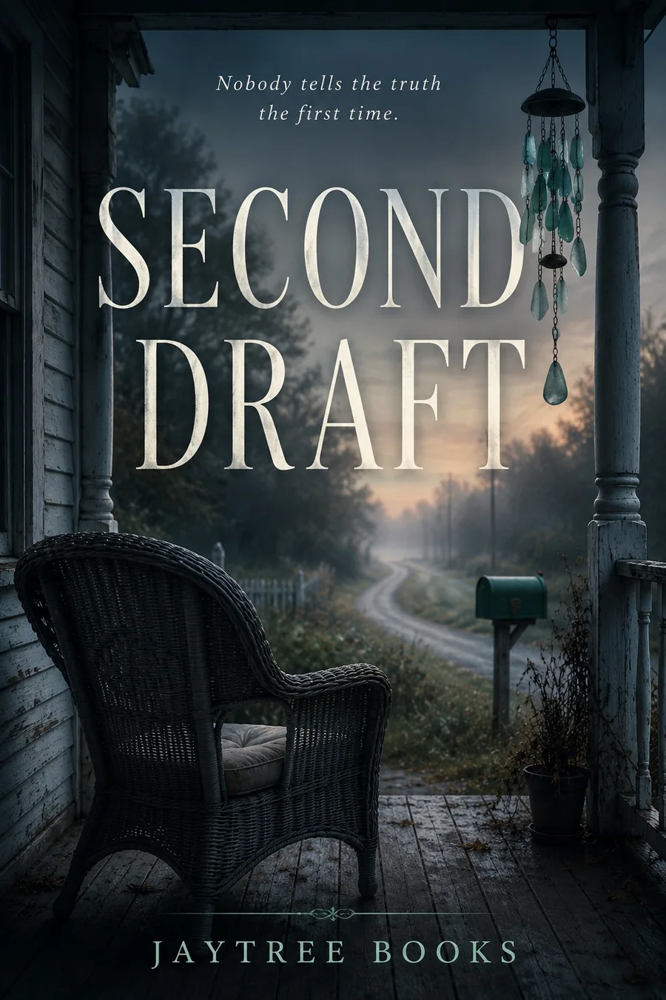

Dark Velvet Female
Vivian Arlow
Dark, intimate, and cinematic. The JayTree default voice for psychological suspense.
Opening credits • Chapter One • Closing credits
Nora helps people rehearse impossible conversations—until the rehearsals begin changing reality. Listen to the same Chapter One in four distinct JayTree voices, then choose the narrator you want for the Classic audiobook edition.
Every preview includes the complete opening credit, Chapter One, and closing credit in the selected narrator's voice. Vivian Arlow is the JayTree recommended default.
Dark, intimate, and cinematic. The JayTree default voice for psychological suspense.
Opening credits • Chapter One • Closing creditsMeasured and atmospheric, with a mature storytelling presence.
Opening credits • Chapter One • Closing creditsWarm gravel and grounded suspense with a restrained dramatic edge.
Opening credits • Chapter One • Closing creditsSteady, resonant, and deliberate for a classic mystery feel.
Opening credits • Chapter One • Closing creditsA more cinematic audiobook experience built around Vivian Arlow's narration, with selective approved character voices, sparse story-driven sound effects, and short score moments—without burying the words under constant music.
Audiobook editions are in production. These listening previews let you compare narrator choices before the full Classic and Immersive editions are released.